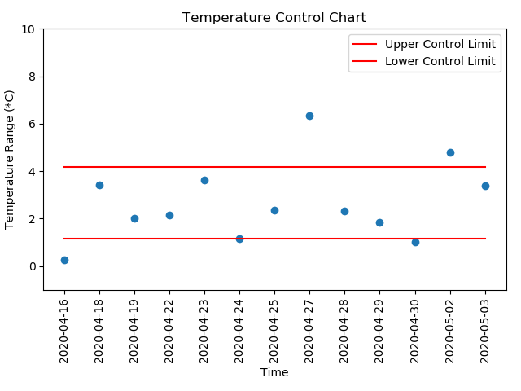

The method for controlling the quality is adapted from Statistical Process Control: Control chart for variables
The difference between is calculated. Then upper and lower control limit are calculated. Data falls out of the control limit are considered to be the result of some assignable causes. And it is responsible for manager to take action about them.
